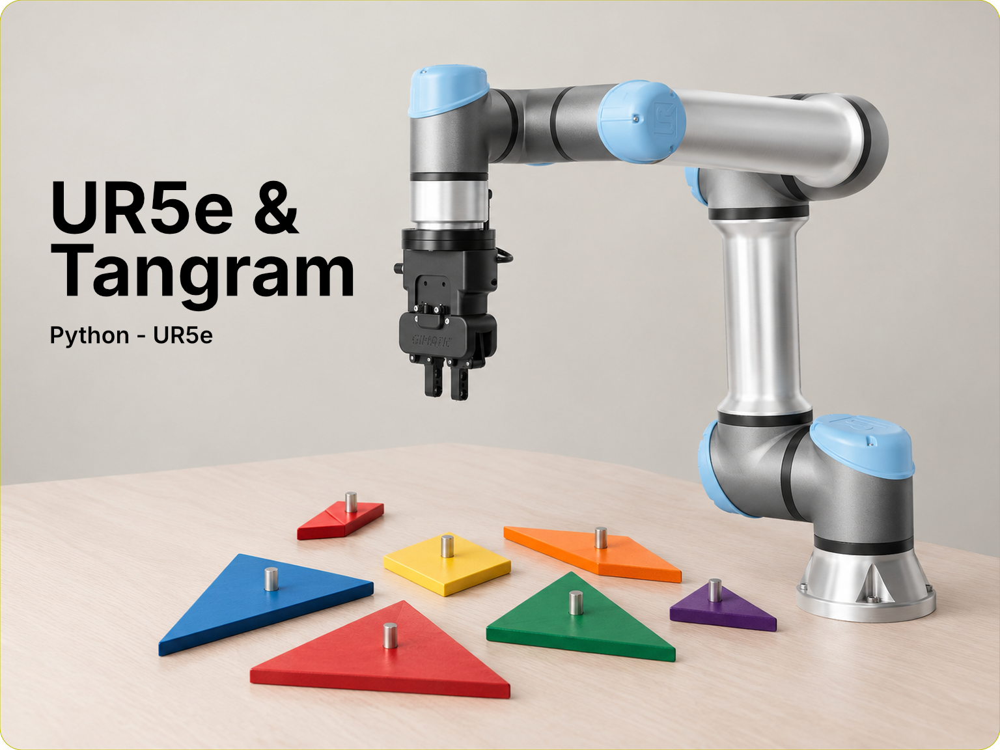
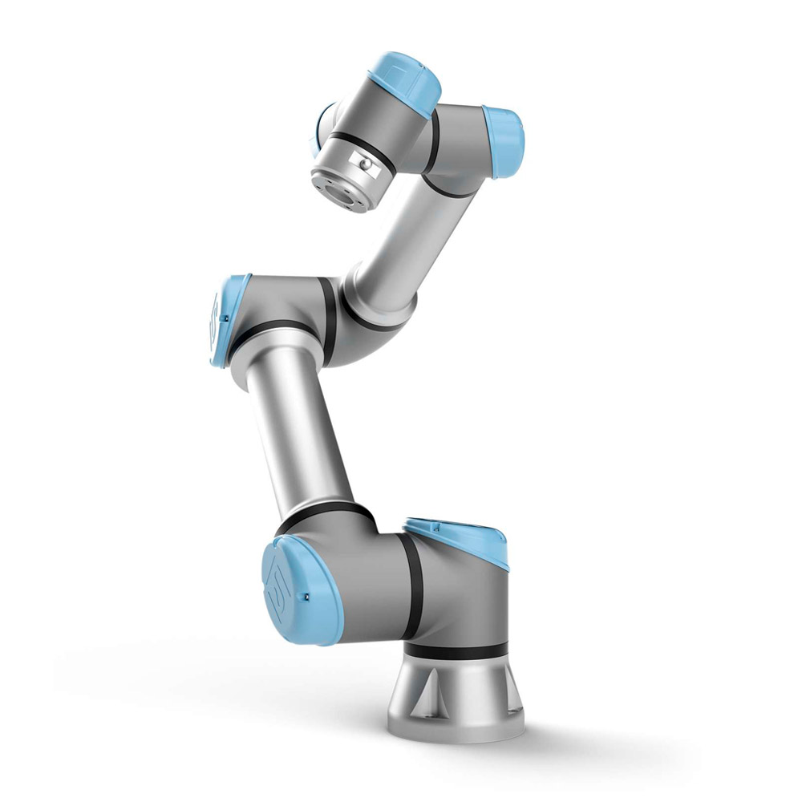
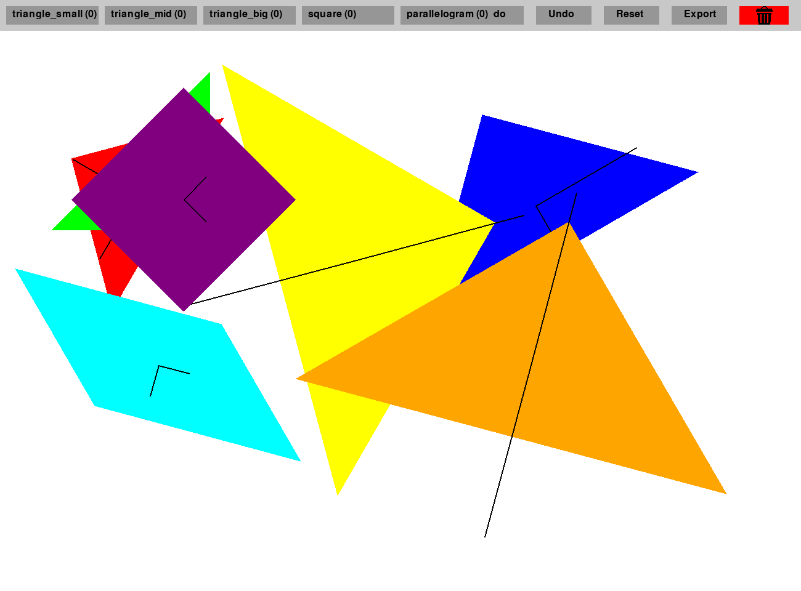
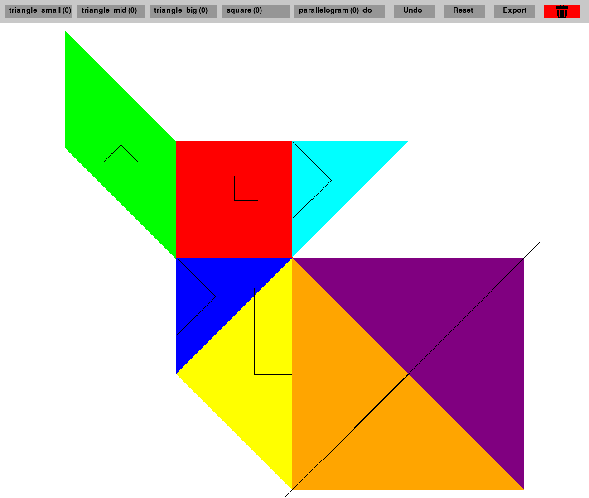
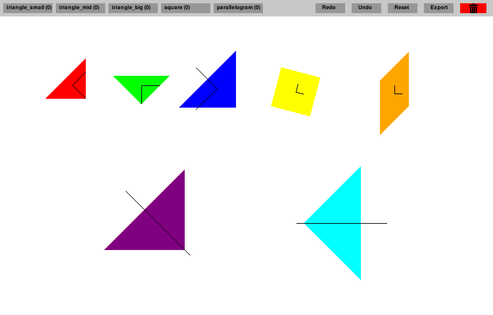
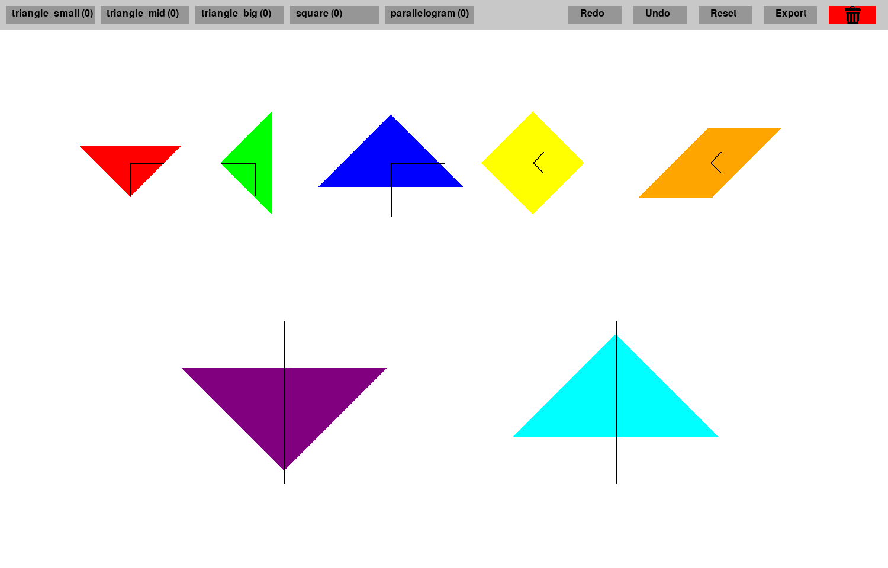

Pilotage d’un UR5e pour un tangram
Une interface permet de composer un tangram, puis de transmettre au robot UR5e une séquence de mouvements pour le reconstruire.
Problématique et objectifs
Le projet vise à relier une disposition dessinée des sept pièces de Tangram à une réalisation de cette disposition par un bras robot UR5e. Seuls le programme de reconnaissance par caméra et la calibration du repère ont été initialement fournis.
À partir de pièces placées aléatoirement sur un repère, le robot doit identifier leurs positions, les saisir et les placer selon la disposition. Le programme Python, quant à lui, doit permettre de dessiner les pièces, de vérifier les collisions possibles et de transformer leurs positions en poses robotiques (positions et orientations).
Approches et choix techniques
Python et Pygame fournissent un éditeur 2D avec déplacement, alignement magnétique, rotations par pas de 15° et annulation des actions. La caméra capture le plateau et associe les repères locaux détectés aux coordonnées du référentiel global du robot. L’export convertit la disposition 2D en poses 6D, transmises par TCP à un programme Universal Robot PolyScope 5 qui pilote l’effecteur final. L’édition s’effectue sur PC et le contrôleur UR du robot exécute les mouvements.
Résultats et limites
L’éditeur, la localisation des pièces et la transmission de poses composent une chaîne de commande jusqu’au programme robot. Un exemple de calibration est fourni dans le projet. Les deux programmes sont directement fonctionnels sur l’UR5e. La détection des collisions et les vérifications de sécurité restent à la charge de l’utilisateur.
Compétences et technologies
- Compétences métier
- Conception et développement d’un logiciel d’édition 2D pour définir et vérifier une disposition de pièces.
- Conversion d’une disposition géométrique en poses robotiques et transmission des consignes au contrôleur.
- Développement d’une communication entre le logiciel PC et le programme embarqué du robot.
- Conception et intégration d’un programme PolyScope pour interpréter les poses reçues et piloter le préhenseur.
- Technologies et logiciels
- Programmation et interface : Python, Pygame.
- Robotique : UR5e, PolyScope 5, préhenseur.
- Vision et communication : caméra, calibration, TCP.
Ressources




